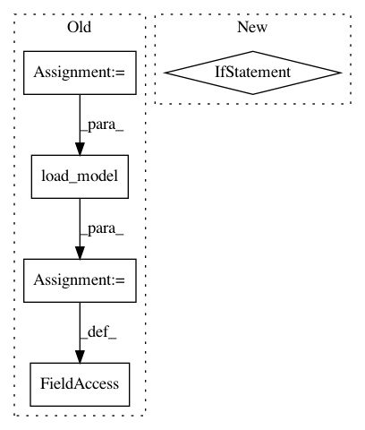

213d55dbdaa82a8d5edeede2a821fe2163881eb7,transcribe.py,,,#,41
Before Change
if __name__ == "__main__":
arg_parser = argparse.ArgumentParser(description="DeepSpeech transcription")
arg_parser = add_inference_args(arg_parser)
arg_parser.add_argument("--audio-path",
default="audio.wav",
help="Audio file to predict on")
arg_parser.add_argument("--offsets",
dest="offsets",
action="store_true",
help="Returns time offset information")
arg_parser = add_decoder_args(arg_parser)
args = arg_parser.parse_args()
device = torch.device("cuda" if args.cuda else "cpu")
model = load_model(device, args.model_path, args.half)
decoder = load_decoder(decoder_type=args.decoder,
labels=model.labels,
lm_path=args.lm_path,
alpha=args.alpha,
beta=args.beta,
cutoff_top_n=args.cutoff_top_n,
cutoff_prob=args.cutoff_prob,
beam_width=args.beam_width,
lm_workers=args.lm_workers)
spect_parser = SpectrogramParser(audio_conf=model.audio_conf,
normalize=True)
decoded_output, decoded_offsets = transcribe(audio_path=args.audio_path,
After Change
transcribe(cfg=cfg)
if __name__ == "__main__":
hydra_main()
In pattern: SUPERPATTERN
Frequency: 3
Non-data size: 5
Instances
Project Name: SeanNaren/deepspeech.pytorch
Commit Name: 213d55dbdaa82a8d5edeede2a821fe2163881eb7
Time: 2020-07-14
Author: sean.narenthiran@digitalreasoning.com
File Name: transcribe.py
Class Name:
Method Name:
Project Name: DenisTome/Lifting-from-the-Deep-release
Commit Name: 70f229dde624412adb0bc466b4eee4929fcc1d91
Time: 2017-07-13
Author: dario.turchi@ocado.com
File Name: demo.py
Class Name:
Method Name:
Project Name: virajmavani/semi-auto-image-annotation-tool
Commit Name: fdc5ba0874f3c978d185f86c67f815527f9afa6f
Time: 2018-05-25
Author: vishalscience75@gmail.com
File Name: main.py
Class Name:
Method Name: